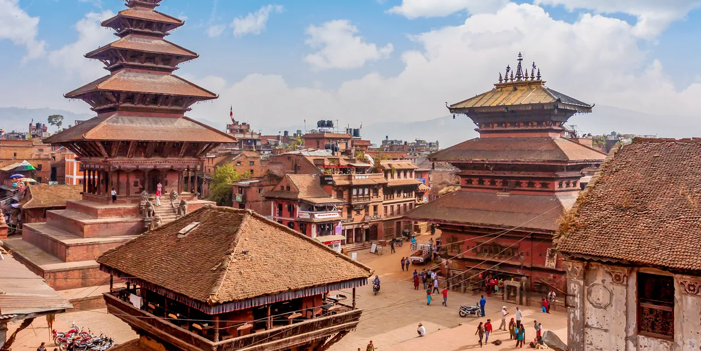
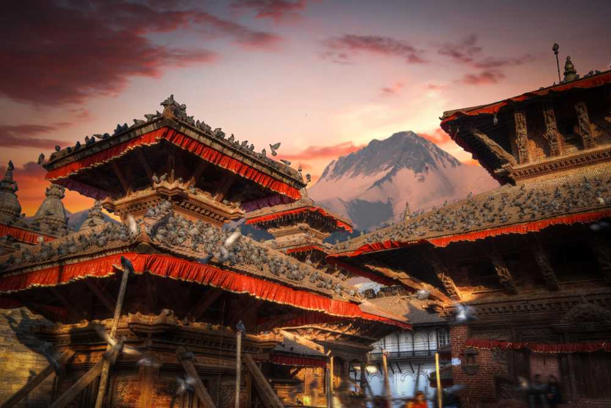
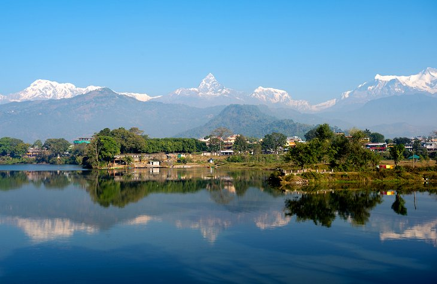

Kathmandu
UNESCO World Heritage Site
Kathmandu, the capital and largest city in Nepal, is like no other city in the world. The decaying buildings in the heart of the city are a stark contrast to the lively atmosphere that permeates the streets.For several hundred years, Kathmandu was one of three rival royal cities, along with Bhaktapur and Patan.The highlight of Kathmandu has long been Durbar Square, the largest of the palace squares in the three royal cities.

Bhaktapur
Royal Cities
Bhaktapur, the third of the "Royal Cities," lies on the old trade route to Tibet, just outside of Kathmandu. For Bhaktapur, the trade route was both an arterial link and major source of wealth.n contrast to Patan and Kathmandu, the population of Bhaktapur is primarily Hindu. The best place from which to begin a tour of the city is Durbar Square, where in addition to the royal palace, several temples are also situated.

Pokhara
Himalayan range and lakes
Set at the base of the foothills and surrounded by some of the highest mountains in the world – Dhaulagiri, Manaslu, and Annapurna I – Pokhara is one of Nepal's most scenic cities. For trekkers, Pokhara is the gateway to the Himalayas and the starting point for treks to Jomsom and the Annapurna region. It's also a wonderful spot to relax for a bit, either before or after a hiking trip.
Annapurna
Trekking in the Annapurna Region
The Annapurna Region is one of the most popular trekking regions in Nepal, with options that range from a few days to a few weeks. Three main routes in the Annapurna Region intersect and combine in places, and you can opt to do a portion or a variation on the routes. The routes are well marked and easy to follow.
Chitwan
Chitwan National Park
Chitwan National Park is the place to come to experience a different side of Nepal. This is a wonderful place for wildlife viewing and it has a safari-type atmosphere. At an altitude of only 100 meters in some areas, much lower than Kathmandu at 1,400 meters.The park is home to rhinos, Bengal tigers, leopards, sloth bears, gaur (buffalo), deer, and many other critters.
Solukhumbu